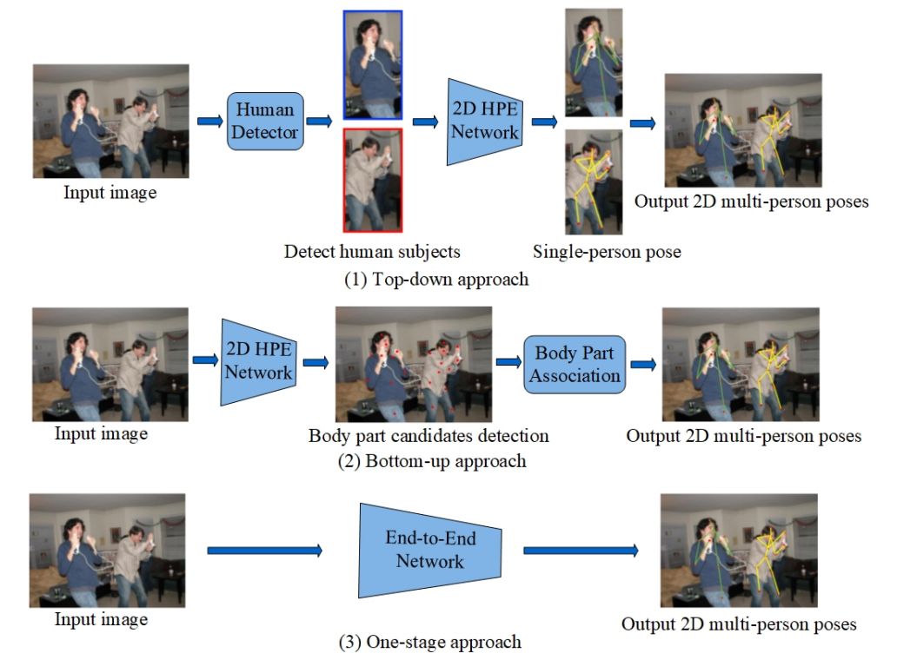

人体姿态估计
基本概念
- 人体姿态估计（Pose Estimation） 人体姿态估计的目标是从图像或视频中估计关节点的坐标位置。
- 人体姿态估计的分类 按照估计关键点的坐标形式，我们可以将姿态估计分为2D姿态估计和3D姿态估计。依据姿态估计的人数可以分为单人姿态估计和多人姿态估计。
基于图像的单人姿态估计（Image-based single-person pose estimation，SPPE）
- 基于回归的方法（Regression-based approach）
- 基于热图的方法（Heatmap-based approach）
- Learning Human Pose Estimation Features with Convolutional Networks（
@ICLR2014）
- Learning Human Pose Estimation Features with Convolutional Networks（
基于图像的多人姿态估计（multi-person pose estimation，MPPE）
相较于单人姿态估计问题，多人姿态估计存在更多挑战和难题： * 目标图像中人的数量和位置是不固定的 * 人与人之间存在互动，存在遮挡、接触，使得部件区分困难 * 模型运行时间复杂度受到人数量的线性增长问题
多人姿态估计需要解决两个问题，全局是需要确定人的位置，局部是确定每个人的关节位置。主流的方法都是基于两阶段的框架，即全局的人体位置定位和局部的关节回归，由此衍生了两个基本框架来解决上述问题，即top-down和bottom-up。除了两阶段的方法，借鉴目标检测中端到端训练的成功，另一个方法线就是一阶段方法，实现端到端的姿态估计。 * Top-down 方法 首先利用目标检测器检测每一个单独的人体区域，然后利用单人姿态估计算法分别检测姿态位置。 - Towards Accurate Multi-person Pose Estimation in the Wild * 
相关综述论文
(1): Human Pose-based Estimation, Tracking and Action Recognition with Deep Learning: A Survey